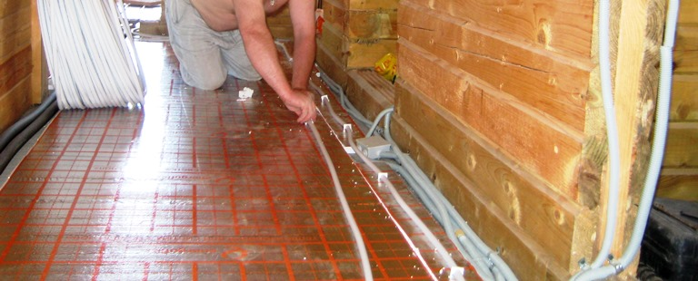

Качественный электромонтаж в Санкт-Петербурге и ленобласти, стаж 12 лет. Частный электрик, недорого и качественно.
Тел. 8 904 642 08 57 Николай.

Сделать пол с подогревом в квартире от частного электрика, фото и цены.
Совет частного мастера!
Пол с подогревом – нужен ли он?
Несколько лет назад установка пола с подогревом была возможностью только состоятельных людей. Сегодня это может позволить себе любой желающий. Современные технологии позволяют многим фирмам по установке пола с подогревом предоставлять свои услуги на рынке, т.к. эта задача перестала быть трудозатратной и дорогостоящей. Преимуществом пола с подогревом является увеличение теплоотдачи, при которой температура обогрева может подниматься до 2,5 метров от пола. При этом тепло равномерно распределяется в помещении. Такие полы часто используются как дополнительный источник тепла в комнатных помещениях. Чтобы определиться, какой пол с подогревом необходим потребителю, необходимо выяснить, какие виды полов сегодня может предоставить рынок услуг.
Сколько стоит сделать пол с подогревом в квартире?
Цена кв. м. от 800 руб.

Метапол представляет собой вмонтированные в пол трубы, по которым подается горячая вода. Пол с электроподогревом предусматривает вмонтированный в пол кабель. При подаче электричества кабель работает по принципу тэна и тем самым нагревается. Пленочные теплые полы имеют тот же принцип работы, но электричество должно подаваться на специальную пленку. Чтобы сделать стоящий выбор, нужно рассмотреть все плюсы и минусы использования полов с подогревом.
 Плюсом использования метапола является его простота установки и простой принцип работы. В пол встраиваются трубы, соединенные с центральной системой отопления, либо с автономным котлом. Горячая вода в трубах подогревает пол и само помещение. Важным условием успешной эксплуатации таких полов является условие необходимости создания пола из теплопроводящего материала, например, цемента, а сверху пол накрывается ламинатом. Минусом такого пола может стать зависимость его от системы отопления. Часто отопление подключают гораздо позже начала отопительного сезона. Еще одним минусом является наличие в системе отопления малого давления горячей воды. Использование такого пола будет успешным при использовании автономного газового или электрического котла. Еще одной проблемой, которая возникает с метаполом, может стать некачественный монтаж или использование некачественных материалов для монтирования оборудования пола. В том случае, если в ходе эксплуатации произойдет течь, может увеличиться риск вероятности затопления соседей.
Плюсом использования метапола является его простота установки и простой принцип работы. В пол встраиваются трубы, соединенные с центральной системой отопления, либо с автономным котлом. Горячая вода в трубах подогревает пол и само помещение. Важным условием успешной эксплуатации таких полов является условие необходимости создания пола из теплопроводящего материала, например, цемента, а сверху пол накрывается ламинатом. Минусом такого пола может стать зависимость его от системы отопления. Часто отопление подключают гораздо позже начала отопительного сезона. Еще одним минусом является наличие в системе отопления малого давления горячей воды. Использование такого пола будет успешным при использовании автономного газового или электрического котла. Еще одной проблемой, которая возникает с метаполом, может стать некачественный монтаж или использование некачественных материалов для монтирования оборудования пола. В том случае, если в ходе эксплуатации произойдет течь, может увеличиться риск вероятности затопления соседей.
Пол с электроподогревом в квартире в СПБ.
Пол с электроподогревом намного функциональнее, потому что он не может зависеть от центральной системы отопления. В данном случае можно запрограммировать температуру в помещении и время подогрева. Для максимального КПД необходимо, чтобы пол был теплопроводящим. Единственным недостатком в таком случае может стать износ пола при условии постоянного его включения на максимум. Само собой разумеется, что при использовании данного вида пола с подогревом увеличатся затраты электроэнергии. Чтобы не возникало проблем с использованием этого пола, нужно использовать качественные материалы во избежание переоборудования пола.
Большой интерес у потребителя в настоящее время вызывает ламинированный пол, в который встроена система подогрева. Такой пол продается блочными конструкциями, в которые уже встроены подогреваемые элементы. Удобством использования ламинированного пола является то, что он легко монтируется в любом помещении, как целиком, так и на отдельных участках.
Конечно, современные технологии в монтировании полов с подогревом более конкурентноспособны в отличие от традиционных систем отопления, основанных на использовании тэнов и радиаторов. Просто нужно определить для себя, какого эффекта хотелось бы достичь потребителю при использовании полов с подогревом.
 Поменять проводку в квартире.
Поменять проводку в квартире. Сколько будут стоить материалы.
Электрика в загородном доме стоимость работ.

Замена электропроводки в панельном доме.
Расценки на электропроводку квартир.
Замена проводки в хрущевке.
Электромонтаж в частном доме.
Электрика в загородном доме.
Сколько стоит замена электропроводки в двухкомнатной квартире?.
Электрик в новостройку однокомнатная квартира недорого.

Сколько стоит поменять электропроводку в 3-х комнатной квартире.